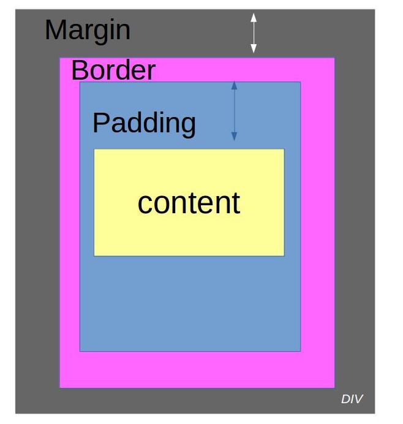

Introduction
CSS :
Le terme CSS est l'acronyme anglais de Cascading Style Sheets qui peut se traduire par "feuilles de style en cascade".
Le CSS est un langage informatique utilisé sur l'internet pour mettre en forme les fichiers HTML ou XML.
Ainsi, les feuilles de style, aussi appelé les fichiers CSS, comprennent du code qui permet de gérer le design d'une page en HTML.
Voici un exemple de règle CSS :
p {font-color: red;
font-size: 12px;}
Explications : cette règle définit la couleur et la
taille du texte pour les éléments <p> (paragraphes) d'un
document HTML. Ainsi, tous les paragraphes auront une police
de couleur rouge et une taille de 12 pixel.
Les selecteurs
Un sélecteur est un attribut qui permet de cibler un élément.
selecteur{ propriété: valeur; }
Pour les balises types <header> <section> <h1> <p>
Pour le modifier dans le css:
header{
propriété: valeur;
}
Quand on crée une classe à une balise comme par exemple:
html:
<p class=“exemple“>
css:
.exemple{
propriété: valeur;
}
Le point permet de sélectionner une classe dans le html.
Proprietes et valeurs CSS courantes
La syntaxe de base du CSS est celle-ci :
selecteur {
propriete : valeur;
}
Certaines proprietes CSS sont incontournables a la construction
d'un site web et sont donc systematiquement utilises.
Voici une liste non exhaustive de certaines de ces proprietes :
Les proprietes de mise en forme du texte
Propriété "font-family"
selecteur {
font-family:Arial, sans-serif;}
Cette propriété fournit le nom de la police utilisée.
Propriété "@font-face"
Valeurs possibles: nom et source de la police.
Cette propriété fournit la source de la police.
Propriété "font-size"
Valeurs possibles: 1em, 1px, 1%
Cette propriété définit la taille du texte.
Propriété "font-weight:
Valeurs possibles:bold, normal
Cette propriété met en gras le texte sélectionné
Propriété "font-style
Valeurs possibles:italic, normal
Cette propriété met en italique le texte sélectionné
Propriété "text-decoration"
Valeurs possibles:underline,overline,blink
Cette propriété souligne ou barre ou fait clignoter le texte.
Les proprietes de couleur
Propriété "color"
Valeurs possibles: RGB, hexadécimal
Cette propriété définit la couleur du texte.
Les proprietes de fond "Background"
Valeurs possibles:Super-propriété contenant "Super-propriété contenant
"background-size"(1em,1px ou 1%),"background-image"(img)
,"background-color"(RGB, hexadécimal)
Cette propriété souligne ou barre ou fait clignoter le texte.
Les proprietes des bordures "Border"
Valeurs possibles:Super-propriété contenant "border-width"(1em,1px ou 1%),"border-style"(solid,dashed, dotted)
,"border-color"(RGB, hexadécimal)
Cette propriété entoure le contenu par une bordure.
Padding et margin:
Pour chaque élément html on peut définir l'espacement qui le séparera des autres éléments (margin) et les espacements intérieurs (padding).

Margin: La marge externe définit l'espace entre le bloc et son extérieur,
Cette dernière spécifie d'un coup la valeur de la marge pour les quatre côtés à la fois.
On peut aussi specifier une valeur en pourcentage ou en px
pour l'un des quatre coté .
Exemple: .article{margin: 0px 10px 20px 30px} ou .article{ margin-left / top / right / buttom : 10px }.
Padding: Le principe reste le même que tout à l'heure sauf
qu'à la place de margin, on utilise padding.
Le padding est une zone, appelée aussi "marge interne" .
Elle est utilisée pour entourer de marge le "contenu" à
l'aide de 4 valeurs.
La padding permet aussi de definir un distance entre des élément .
Exemple: padding-top : marge intérieure en haut
padding-bottom : marge intérieure en bas
padding-left : marge intérieure à gauche
padding-right : marge intérieure à droite
Presentation de Flexbox
Introduction
Flexbox est un module CSS utilise pour la mise en page. Flexbox est organise selon un systeme bloc/element. Le principe est simple : un bloc quelconque auquel est applique la propriete ''display'' et la valeur ''flex/inline-flex'' est defini en tant que conteneur flex.
Les elements a l'interieur de ce conteneur flex peuvent alors etre agences selon les proprietes flexbox.
La syntaxe de base est celle-ci :
conteneur {
display : flex;
}
Liste non-exhaustive des proprietes et valeurs Flexbox
Les proprietes applicables aux conteneurs
Propriete ''display'' :
Valeurs possibles : flex, inline-flex.
Cette propriete definit un conteneur flex, de type bloc
avec la valeur ''flex'' ou de type inline avec la valeur
''inline-flex''.
Propriété ''flex-direction''
Valeurs possibles :row, row-reverse, column, column-reverse.
Cette propriété définit l'axe et la direction où sont placés les éléments du bloc.
En ligne de gauche à droite pour ''row'' et de droite à gauche pour ''row-reverse'', en colonne de haut en bas pour
'' column'' et de bas en haut pour ''column-reverse''.
Propriété ''flex-wrap''
Valeurs possibles :nowrap, wrap, wrap-reverse.
Cette propriété définit l'agencement en ligne des éléments.
Sur une seule ligne avec ''nowrap'', sur plusieurs avec
''wrap'' de haut en bas et de bas en haut avec ''wrap-reverse''.
Propriété ''justify-content''
Valeurs possibles :flex-start, flex-end, center, space-between.
Cette propriété définit la répartition de l'espace entre les éléments.
Propriété ''Flex-start''
Les éléments sont groupés au début du
conteneur, le bord du premier élément aligné avec le bord
du conteneur.
Propriété ''Flex-end''
Les éléments sont regroupés à la fin du
conteneur, le bord du dernier élément aligné avec le bord du conteneur.
Propriété ''Center''
Les éléments sont groupés au centre du conteneur
Propriété''Space-between''
Les premiers et derniers élément
sont alignés aux bords du conteneur, l'espace entre les éléments étant égaux
Les propriétés applicables aux éléments
Propriété "Order"
Valeurs possibles : nombre entiers
Cette propriété définit l'ordre d'affichage des
éléments selon leur nombre, en ordre croissant.
Propriété ''flex-grow''
Valeurs possibles : nombre entiers
Cette propriété définit la capacité d'un élément à grossir, en fonction de son nombre et de celui des autres éléments. Un élément défini à 2 et les autres à 1 pourra prendre deux fois plus d'espace que les autres.
Propriété ''flex-shrink''
Valeurs possibles : nombre entiers
Cette propriété complémentaire à la propriété
''flex-grow'' définit la capacité d'un élément à
rétrecir, en fonction de son nombre et de celui des autres éléments. Un élément défini à 2 et les autres à 1 pourra se réduire de moitié.